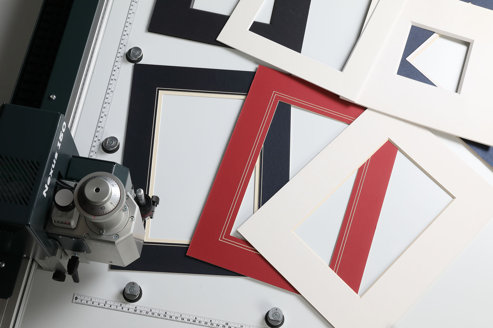
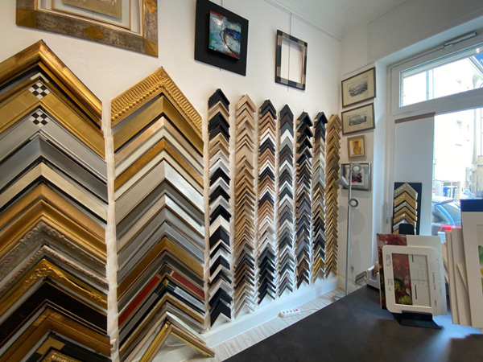

Nature
Bois naturel, massif et placage.
Une qualité qui fait la différence : tous les cadres Nielsen, en aluminium comme en bois, sont réalisés avec des matériaux de grande qualité.

Retrait à l'atelier Hollerich après commande en ligne.
Configurez baguette, passe-partout et verre en direct.
Cadre certifié FSC®. Fabrication allemande.
Bois naturel, massif et placage.
Un monde tout en couleur : vives ou pastel, mates ou brillantes.
Des lignes pures, associées à des finitions sobres ou métallisées.
L'univers des dorures, des patines à l'ancienne et des finitions blanchies.
Vous composez baguette, passe-partout et verre en ligne. Le prix s'affiche tout de suite. Le retrait se fait à Hollerich, souvent dans l'heure selon le stock. Si le format sort du catalogue, nous passons au sur-mesure.


Click & Collect · retrait en 1 h à l'atelier